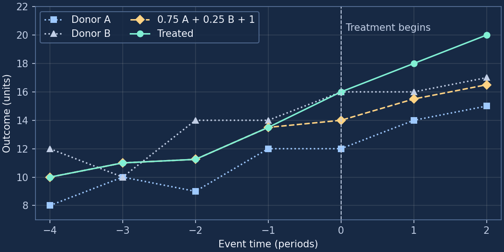

Name whose outcome would change, under which intervention and over what window. The questions below narrow the candidate comparisons. Eligibility records, treatment dates and observed outcomes establish support. The counterfactual restrictions require a design argument.
Staggered DiD. Compare each adoption cohort with unexposed, untreated observations at the same dates. Verify parallel untreated changes, no anticipation, and stable composition. See staggered-adoption methods.
Before fitting, tabulate observations and missing waves by group and date, audit treatment paths and measurement windows, and check which units remain untreated and unexposed at each horizon. For repeated cross-sections, check changes in group composition. For survey outcomes, use design weights, strata and primary sampling units for the stated target and variance. Kish’s effective sample size, (Σw)²/Σw², summarizes weight concentration.
One start date or several adoption cohorts
One shared start with outcomes before and after? Start with the 2×2 contrast and common-adoption fixed effects. With multiple starts, keep calendar dates and event time separate. The cohort grid shows an unadjusted effect for one cohort and date.
Callaway–Sant’Anna
Estimate ATT(g, t) for cohort g at date t from panel changes or compatible repeated cross-sections. Compare with never-treated or units still untreated and outside their anticipation window through t. Under conditional parallel trends, use outcome regression, propensity weighting or a doubly robust score for the data structure. Display overlap and cohort-date counts before aggregating. Changing support can change the event-time population. Callaway & Sant’Anna
Sun–Abraham
Estimate cohort-by-event-time effects in a panel, relative to a specified untreated reference. Use never-treated or a last-treated cohort in dates when it is untreated. Aggregate with cohort shares among supported cohorts at each horizon. Inspect cohort-by-horizon support. A shrinking cohort mix can mimic changing dynamics even with parallel untreated trends. Sun & Abraham
Stacked DiD
Build a subexperiment around each adoption date with controls untreated through its window. Use a common relative window with enough support to keep the treated cohort mix fixed. The window can have different pre and post lengths. Corrective weights align treated and control trends across stacks with the target aggregation. Audit repeated controls and weight totals. Unweighted pooling can compare different cohort mixes. Cluster across stacks at the original assignment or dependence unit. Wing, Freedman & Hollingsworth
Local-projection DiD
Regress each horizon’s change from the last untreated date on adoption using clean comparisons with usable follow-up. Parallel untreated changes are horizon-specific. Reweight for the estimand, for example equal weight per treated unit, which gives cohort-size weights. Inspect the sample and weights separately by horizon. A unit that starts treatment within the horizon can contaminate the controls. Equivalence with other cohort estimators requires matching samples, baselines, controls, specifications and weights. Dube, Girardi, Jordà & Taylor
Double/debiased machine learning (DML)
Use an orthogonal ATT score for a given DiD contrast when conditional parallel trends and overlap are plausible. In a panel the nuisance models can be the untreated outcome change given baseline covariates and the propensity for joining the treated cohort among its eligible comparison set. Repeated cross-sections require the corresponding group-date outcome regressions and sampling conditions. For the panel doubly robust score the product of the two prediction errors in L² must be o(n−1/2) for regular root-n inference, with n counting independent units under the usual other conditions. The two rates may differ. Split folds by independent unit or cluster and check overlap, prediction and effective sample size by fold. A treatment-affected covariate requires a separate untreated-evolution model and additional assumptions. See propensity weighting and cross-fitting. Sant’Anna & Zhao · Caetano et al. on treatment-affected covariates
Weight diagnostics. Tabulate the canonical static regression’s two-by-two comparisons and their nonnegative Goodman–Bacon weights, including already-treated comparisons. Separately inspect the signed weights on treated group-time effects. For the canonical sign-fragility calculation, measure effect dispersion across treated group-time cells with the specified treated-population weights. A switcher estimand requires its own target weights. Goodman–Bacon · de Chaisemartin & D’Haultfœuille’s weight diagnostics
Estimate an untreated outcome model
Decide which untreated dates are informative for the specific target. A last-pre-period contrast can need only the relevant untreated change. Pooling earlier dates can add precision under the restrictions that make those dates valid for the model.
Borusyak–Jaravel–Spiess imputation
Fit the untreated outcome model on untreated unit-date observations, often with additive unit and date effects. Predict untreated outcomes for supported treated cells, subtract from observed outcomes, then average with target weights. Check untreated fit and whether unit and date effects can be estimated for the required cells. Untreated-model misspecification or unsupported dates directly distort the imputations. Borusyak, Jaravel & Spiess
Gardner two-stage DiD
Fit group or unit and date effects on untreated observations. In the second stage, regress residualized outcomes on treatment or event-time indicators to target weighted treated effects. Align the untreated sample, first-stage model and second-stage weights when comparing with imputation. Check residualized trends and support. Second-stage uncertainty alone omits estimation of the first stage. Gardner
Chen–Sant’Anna–Xie efficient DiD
Use multiple valid untreated-period moment restrictions, with covariates when justified, for cohort-time effects in short panels. The restrictions can support an efficient combination of alternative pre-period contrasts. Inspect how those moments fit and how precise they are jointly. The efficiency comparison assumes valid restrictions and suitable regularity and support. An older period may add no precision, or bias the estimate if its restriction fails. Chen, Sant’Anna & Xie
Wooldridge extended TWFE
Model the untreated outcome and include a separate cohort × calendar-period indicator for each estimable treated cell. Omit reference cells consistent with the chosen untreated model. A cohort × post indicator alone constrains all its post-period effects to be equal. Compare last-pre or pooled-history versions on their specific restrictions and inspect the untreated fit. With a nonlinear link, average predicted treated-minus-untreated outcomes for the target cohort-date on the outcome scale. A link-scale coefficient alone can give the wrong policy contrast. Wooldridge
Lee–Wooldridge rolling DiD
Evaluate an adoption cohort and follow-up using a comparison set still unexposed through that date. Specify the rolling sample, the baseline or pre-period average, and any detrending restriction. Unit-specific extrapolation from earlier outcomes requires enough pre-treatment observations per unit. Cohort slopes instead impose a shared trajectory adjustment within each cohort. Inspect sensitivity to the pre-window and check horizon support. A trend estimated over too few periods can dominate the result. Lee & Wooldridge
Hausman comparison. Compare estimators of the same target in the same sample, such as a last-pre contrast and an estimator using additional valid moments under the null. Use the variance of their difference, Var(A) + Var(B) − 2 Cov(A, B), from joint influence functions or an appropriate shared resampling design. A difference-of-variances shortcut needs the efficiency/orthogonality conditions that justify it. Disagreement identifies tension among the restrictions. Assess sensitivity to departures from parallel trends.
Build a comparison from donor histories

The illustrative blend uses weights 0.75 and 0.25. An outcome-level offset aligns pre-period levels. Synthetic DiD also weights pre dates to match the donors’ post level. A factor model can capture shared movements with different unit loadings.
How to read the donor diagnostics
Diagnostic
Illustration
Synthetic control pre-fit and placebo gaps
The figure’s raw blend misses each pre-period level by 1 unit and has a month-0 gap of +3. A comparable pre-fit placebo with a gap of +2.5 would weaken the case that +3 is unusual.
Synthetic DiD weight concentration
The donor weights give 1.60 effective donors. Illustrative pre-period weights of 0.10, 0.15, 0.25 and 0.50 give 2.90 effective pre-periods. Half the time weight rests on the last pre-period.
TROP held-out untreated error
In an illustrative validation block, compare a held-out root mean squared prediction error of 0.80 with 0.95 for an additive-only model. Measure errors on the same untreated cells.
Synthetic control
Estimate a treated unit’s post-period gap against an unexposed donor blend with nonnegative weights summing to one. A credible convex combination needs long, comparable pre-outcomes and pre-fit that can plausibly extend without treatment. Inspect donor weights, pre-fit, post gaps and placebo gaps under the same recipe. Poor support, donor contamination or a dominant donor can undermine the contrast. A placebo plot supplies sensitivity evidence. A formal reference distribution needs a defensible assignment or sampling argument. Abadie
Synthetic DiD
Estimate an average effect over a treated block of unit-date cells. Pick donor weights to match the treated pre-path up to a level offset, and time weights to align donor pre outcomes with their post outcomes. Then contrast weighted changes under the resulting counterfactual model. Inspect pre-fit and the concentration of both sets of weights. Short histories, shocks absent from donors, or weights on nearly single observations can make the fit unstable. Arkhangelsky et al.
Triply robust panel (TROP)
Predict missing untreated outcomes for supported treated cells with unit and time weighting, additive effects and a regularized latent factor component. The block-design bias bound depends on its weighting and outcome restrictions. Check held-out untreated prediction error and sensitivity to factors and tuning. Strong fit in one untreated block can fail in a new regime. An extension for switching requires no carryover for the indicated comparisons. Athey et al.
Compare eligibility gaps or map spillovers
Eight cells for a triple difference
Area and date
Eligible
Ineligible
Program area · before
Eligible baseline
Subgroup baseline
Program area · after
Exposed
Must be unaffected
Comparison area · before
Eligible baseline
Subgroup baseline
Comparison area · after
Unexposed comparison
Unexposed subgroup
Form the eligible-minus-ineligible gap in each row. Compare its change across areas.
Common-adoption triple differences (DDD)
Target the effect for eligible people in the program area. Require an unaffected comparison subgroup and parallel untreated changes in eligibility gaps across areas. Audit all eight cells and subgroup composition over time. With covariates, build the conditional contrast then standardize it to the target covariate distribution. Differencing two independently averaged DiDs can mix different covariate populations. Ortiz-Villavicencio & Sant’Anna
Staggered triple differences
Estimate an eligible-cohort effect at each supported date using a valid comparison cohort with both eligibility subgroups. Form cohort-specific gap contrasts before aggregating. Inspect eight-cell support and composition at each horizon. Pooling all not-yet-treated units can introduce bias even when covariate adjustment is unnecessary. Ortiz-Villavicencio & Sant’Anna
Spatial spillover DiD
Program areaOwn adoption at month 0
NeighborFirst exposure at month 0
Outside radiusClean comparison while unexposed
Define the exposure radius from how the intervention travels. Record own adoption and first neighbor exposure separately.
Compare own treatment holding neighbor exposure fixed for a direct effect, exposure among untreated units for a spillover effect, or joint own and neighbor exposure against neither for a total effect. Require support for the relevant combinations and parallel counterfactual changes under a defensible exposure mapping. Tabulate support by horizon and try plausible exposure definitions. A misspecified radius can contaminate controls. The distance used for spatial covariance is a separate inference choice. Butts
Follow treatment paths
Illustrative treatment histories
Path
Baseline
Period 1
Period 2
Period 3
Untreated comparison
0
0
0
0
Small positive adoption
0
ε > 0
ε
ε
Treated path with repeated switches
2
4
0
3
Same-baseline stayer
2
2
2
2
The treated switching path turns off and crosses its starting dose. Group trajectories by initial dose and first switch before building horizon comparisons.
Continuous-dose DiD
Compare outcomes at an observed dose to the zero-dose counterfactual for units receiving that dose, with untreated units and a parallel untreated change restriction. A derivative holding the target population fixed requires stronger cross-dose comparability. Check support by dose and time, especially near zero. A slope through dose-specific effects can combine response and selection across dose groups. Callaway, Goodman-Bacon & Sant’Anna
Heterogeneous adoption without stayers (DIDHAD)
In the no-stayers adoption design, near-zero positive doses can recover the untreated change via continuity at the boundary under the design’s common-trend restriction. The target is a weighted average of dose-normalized effects, with the estimator’s stated weighting scheme. Inspect dose mass near zero and boundary-fit sensitivity. Without adequate near-zero variation the approach relies on extrapolation. DIDHAD authors’ guide
Intertemporal DiD
Compare switchers’ observed paths after a first change to staying at their initial treatment. Require same-baseline controls that stay at baseline through the horizon, and compatible untreated-increment trends and histories where carryover matters. Lagged effects can persist after switch-off and repeat switches. Audit comparisons by direction and horizon. A sign orientation aligns upward and downward first changes. Dose normalization scales by the relevant cumulative dose difference and can combine current and lagged responses. Inspect paths crossing baseline separately because the signed dose denominator can cancel and change the interpretation. de Chaisemartin & D’Haultfœuille
Change the outcome target
Treated pre-quantileLocate its outcome value.
Control pre-rankFind the percentile of that value among controls.
Control post-quantileRead the outcome at that percentile.
The transported outcome is the treated group’s counterfactual post quantile. Subtract it from the observed treated post quantile.
Changes-in-changes (CiC)
Estimate treated counterfactual quantiles from treated and unexposed comparison distributions at both dates. A common monotone outcome transformation and stable within-group latent distributions justify the transport over shared support. Check tail overlap and composition. The transport works at the distribution level. Individual ranks can move. For conditional CiC, integrate the conditional counterfactual distributions over treated baseline characteristics before taking marginal quantiles. Athey & Imbens
Additive quantile DiD
Apply the untreated control’s change in a chosen quantile to that treated pre-quantile. This requires parallel untreated quantile shifts on the selected outcome scale, a distinct assumption from common rank transport. Inspect the implied counterfactual distribution for crossing and check common support. Additive shifts depend on the outcome scale. For conditional models, integrate distributions before reading a marginal quantile. Athey & Imbens
Duration DiD
For an absorbing event such as contract exit, target the difference in cumulative exit probability by a named duration. Align cohort origin and risk sets. Comparable repeated cross-sections or uneven observation dates can provide the needed group survival means. Check censoring, cohort composition and risk-set support. Use S(t) for survival and H(t) = −log S(t) for cumulative hazard.
Illustrative survival and cumulative hazards
Group
Survival at month 1
Survival at month 2
ΔH
Interval exit probability among month-1 survivors
Comparison
0.80
0.72
0.105
10%
Treated, observed
0.75
0.60
0.223
20%
Common dynamics assume a constant additive gap between untreated hazard rates. A proportional-hazards restriction instead gives proportional increments of cumulative hazard. An interval exit probability is 1 − exp(−ΔH). Convert the reconstructed counterfactual survival to cumulative exit (1 − S) before reporting the effect. Check pre-treatment hazard implications on the chosen scale, including within covariate strata if used. Non-comparable cohorts, informative censoring and sparse risk sets can invalidate the comparison. Deaner & Ku, Theorem 1 and Remark 3 · Retention
Assignment by cutoff
Does a documented score threshold change eligibility, with outcome data just above and below it? Go to sharp and fuzzy Regression Discontinuity to choose between an eligibility effect and a local receipt effect, and use the cutoff explorer to inspect both sides.